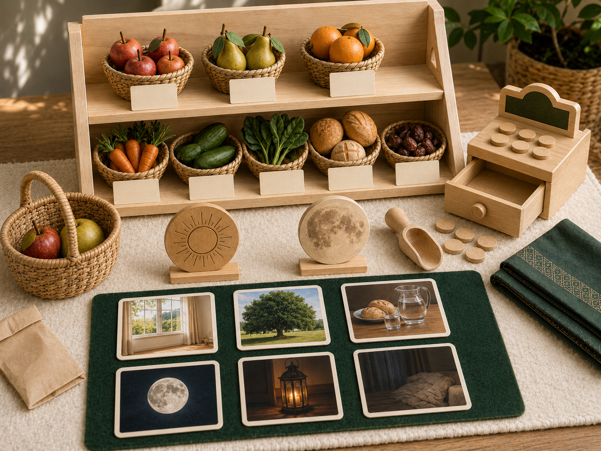

الدرس الأول · سورة الفجر (١٥–١٦)
خيار ١ · 🛒 ركن الدكان⏱ ١٥ دقيقة

أُوثِر صديقي
- الأهداف
- يشارك زميله ويؤثره بسلعة عند حاجته.
- يربط شكر النعمة برحمة الآخرين.
- الأدوات
- السلع، السلال، درج النقود.
- الخطوات
- أثناء اللعب، إن احتاج زميلٌ سلعةً ولم تبقَ لديه «نقود»، يعطيه الطفل من سلعه أو يشاركه إيّاها.
- يقول له كلمة طيّبة ويبتسم في وجهه.
- نتحدّث: نشكر نعمتنا برحمة غيرنا ومشاركته، لا بالاستئثار بكل شيء.
- لعب حرّ بعده
- بيع وشراء حرّ بأدوات الدكان مع التزام القوانين.
المعنى المركزي للدرس: النعمة والضيق كلاهما ابتلاء من الله؛ المؤمن يشكر عند العطاء ويصبر عند الضيق، ويرحم اليتيم والمسكين.
🖨️ ملف الطباعة — بطاقات مواقف الإيثار
خيار ٢ · 🧩 ركن أدرك وأستمتع⏱ ١٥ دقيقة

ميزان الشكر والصبر
- الأهداف
- يفرز مواقف الحياة إلى نعمةٍ تستوجب الشكر وضيقٍ يستوجب الصبر.
- ينطق الاستجابة المناسبة: «الحمد لله» عند النعمة، و«صبرًا والأجر من الله» عند الضيق.
- يدرك أنّ النعمة والضيق كليهما ابتلاء وخير للمؤمن.
- الأدوات
- ميزان الكفّتين، وبطاقات المواقف المطبوعة (١٢ بطاقة)، وبساط الميزان (كفّة الشكر / كفّة الصبر) — من ملف الطباعة.
- الخطوات
- يُعرض بساط الميزان، ويتّفق الأطفال على قول كل كفّة.
- يسحب الطفل بطاقة موقف، يصفها، ويقرّر: أنعمةٌ هي أم ضيق؟
- يضعها في كفّتها الصحيحة وينطق الاستجابة المناسبة.
- عند امتلاء الكفّتين نتفكّر: كلتاهما خيرٌ؛ لأنّ المؤمن مأجورٌ في الحالين.
- لعب حرّ بعده
- استكشاف حرّ لألعاب الإدراك والفرز مع إعادة الأدوات.
المعنى المركزي للدرس: النعمة والضيق كلاهما ابتلاء من الله؛ المؤمن يشكر عند العطاء ويصبر عند الضيق، ويرحم اليتيم والمسكين.
🖨️ ملف الطباعة — بطاقات المواقف وبساط الميزان